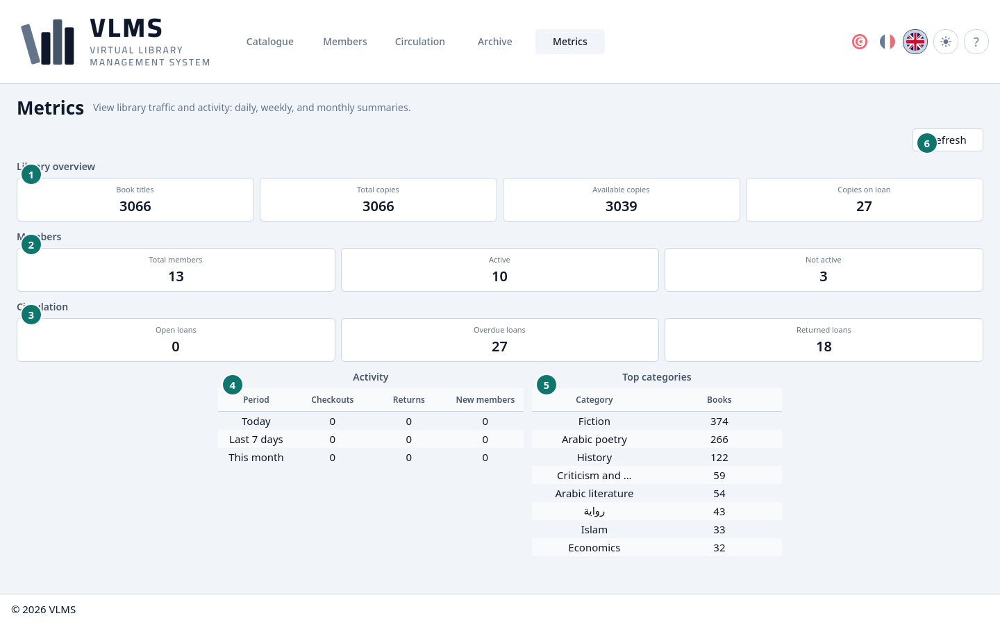

Metrics
Counts of the catalogue, the members, and the loans.
Metrics is a dashboard, not a list. Refresh reads the figures again.


- Library overview
- Members
- Circulation
- Activity
- Top categories
- Refresh


Library overview
- Book titles — live titles.
- Total copies — live copies.
- Available copies — on the shelf.
- Copies on loan — out now, whether the loan is open or overdue.
Members
- Total members — live members.
- Active — last active day today or later. See Member status.
- Not active — everyone else who is still live.
Circulation
- Open loans — out, and due today or later. This does not include overdue loans.
- Overdue loans — out, and past the due day.
- Returned loans — back, and not yet archived.
The same split is in Loan states.
Activity
Checkouts, returns, and new members, for today, the last 7 days, and this month.
Top categories
The categories with the most live titles, and how many titles each one has.